class: center <br> # Spatial Analysis of Urban Data ## Computer Vision for Urban Decisions One street view, three urban questions [Bayi Li](mailto:barryli081@gmail.com) <br> <button onclick="window.location.href='index.html'">Go Back to Menu</button> --- name: urban-questions ## What Would a Planner Want to Know About This Street? .right_half[ <figure> <p>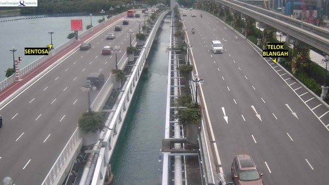</p> <figcaption>Camera 4799, 18 Nov 2026, 14:40.</figcaption> <figsubcaption>LTA traffic images via data.gov.sg; teaching sample.</figsubcaption> </figure> ] Look before measuring. What here could the city act on? *Data source: [Traffic Images by LTA](https://data.gov.sg/datasets/d_6cdb6b405b25aaaacbaf7689bcc6fae0/view#GET/transport/traffic-images)* -- - **The vehicles:** is traffic pressure building, and when? - **The planters:** how much greenery does someone on this route see? - **The red path:** can people walk here safely and continuously? -- **Computer vision** extracts information from images or video. **GIS** connects those observations to places, populations, and networks. --- name: traffic-pressure ## Traffic: Where Should We Investigate Queues? .right_half[ <figure> <p>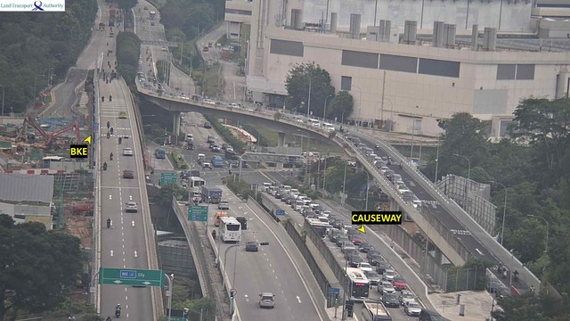</p> <figcaption>What can this single view establish?</figcaption> <figsubcaption>LTA traffic images via data.gov.sg; teaching sample, 18 Nov 2026.</figsubcaption> </figure> ] The vehicles in the opening view raise the first question. Queues affect bus reliability, access to services, and how easy a road is to cross. A single frame can tell us **how many vehicles are visible** on a defined stretch of road. It cannot tell us how long a queue lasts or how fast it moves. It might need continuous observation. We start by counting with **object detection**, then ask what extra observation turns a count into flow. --- name: traffic-sample ## Traffic Evidence: What Does Our Sample Contain? .right_half[ <p>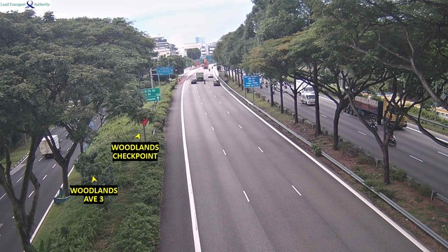</p> <p>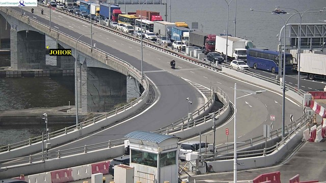</p> <p>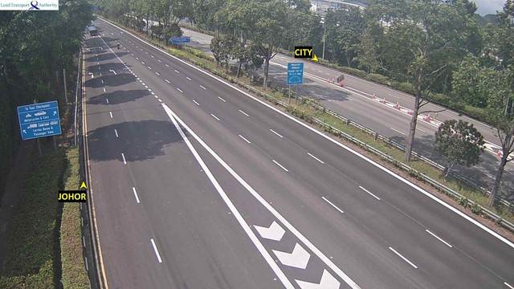</p> ] **Singapore traffic camera sample:** 8 geotagged images from one snapshot (18 Nov 2026, 14:40:58 SGT). .cv-small[ - **Source:** LTA traffic cameras via [data.gov.sg](https://data.gov.sg/collections/traffic-images/view) - **Licence:** [Singapore Open Data Licence v1.0](https://data.gov.sg/open-data-licence) (see source terms and attribution) - **Image handling:** downscaled to 640×360; inspect for identifiable details before sharing - **Files:** `images/*.jpg` + [`metadata.csv`](data/sg_traffic_images/metadata.csv) (camera_id, lat, lon, timestamp) - **Scope:** snapshot counts and image composition; these eight views cannot establish traffic flow or citywide conditions. ] <button onclick="window.open('https://colab.research.google.com/github/BayiLi081/GIS-training/blob/gh-pages/cvurban_colab.ipynb')">Open hands-on notebook in Colab</button> <button onclick="window.open('https://github.com/BayiLi081/GIS-training/tree/gh-pages/data/sg_traffic_images')">Get the dataset</button> --- name: tools-intro ## Before the Notebook: Models, Weights, and Two Libraries .left_half[ .cv-compact-table[ | Term | What It Means Here | |---|---| | **Model** | the architecture, a recipe of layers: RT-DETR, YOLO, SegFormer | | **Weights** | the numbers learned in training, saved as a file and downloaded once | | **Pretrained** | already trained by someone else on a large dataset (COCO, Cityscapes) | | **Inference** | running a trained model on new images; we do not train in class | | **Threshold** | the minimum confidence score for keeping a box | ] **Same model, different weights, different skills:** COCO weights know cars and buses; Cityscapes weights know road, sidewalk and vegetation. ] .right_half.cv-code-small[ **Hugging Face `transformers`:** `pipeline` downloads the weights, resizes the image, runs the model and returns labelled results in one call. ```python from transformers import pipeline detector = pipeline("object-detection", model="PekingU/rtdetr_v2_r18vd") detector(img, threshold=0.5) # [{label, score, box}, ...] ``` **Ultralytics `YOLO`:** one object to predict, track, train, and export. ```python from ultralytics import YOLO model = YOLO("yolo26s.pt") # s = small; also n, m, l, x model.predict(img, conf=0.25) # boxes, classes, scores ``` .cv-small[`model=` names a checkpoint on the [Hugging Face Hub](https://huggingface.co/models) as `publisher/model`; change it to try another model.] ] <div style="clear: both"></div> --- ## Detect Vehicles: Turn Boxes into a Defined Count **Question:** how many vehicles are visible inside the same road area at each observation time? .cv-compact-table[ | Stage | Method | Check Before Interpreting | |---|---|---| | Locate objects | RT-DETR and YOLO in the notebook: compare before choosing | boxes can miss small or occluded vehicles | | Select classes | retain specified vehicle labels | document whether bicycles and motorcycles are included | | Define the count | filter to a fixed road region and confidence threshold | the notebook counts the full image; add a region for a traffic study | | Validate | compare with manual boxes and counts | report misses, false detections, and count error | ] **Output:** visible vehicle count per image and timestamp. Different camera views cover different road areas, so raw counts are not directly comparable traffic-density measurements. .cv-small[ **Try notebook section 3:** run both detectors on camera 4703 and check them against your own count. This is inference with pretrained weights, not local model training. ] .references[ - [RT-DETRv2 model and COCO training information](https://huggingface.co/PekingU/rtdetr_v2_r18vd) - [Ultralytics detection task](https://docs.ultralytics.com/tasks/detect/) ] --- name: traffic-result ## Result: Two Detectors, Two Counts at Camera 4703 <div align="center"> <p>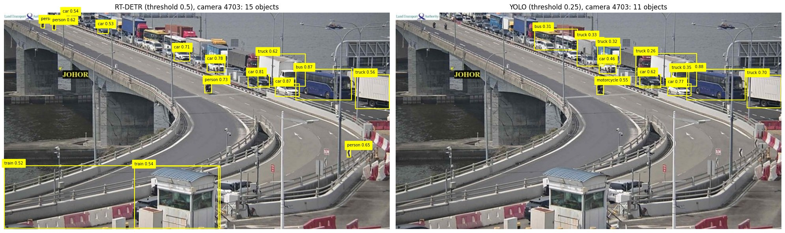</p> </div> .cv-compact-table[ | 18 Nov 2026, 14:40:58 | RT-DETR (threshold 0.5) | YOLO26s (threshold 0.25) | |---|---|---| | Vehicles counted | 9 | 11 | | Does better | boxes more individual cars (6 vs 3) | labels the motorcyclist as a motorcycle; no false "train" boxes | | Does worse | "train" on a booth; motorcyclists as "person" | some boxes enclose several queued vehicles | | CPU time per image | ~150 ms | ~35 ms | ] **Back to the question:** vehicles were queuing at this instant, and both counts miss most of the queue. The models fail in different ways, so test the available ones against a hand count before choosing. --- ## Need Flow? Add Time and Track Crossings **Urban question:** how many vehicles or pedestrians pass a defined line during an observation interval? .left_half[ <iframe class="cv-video-frame" src="https://www.youtube-nocookie.com/embed/OS5qI9YBkfk" title="Roboflow: Track and Count Objects using YOLOv8, ByteTrack and Supervision" loading="lazy" referrerpolicy="strict-origin-when-cross-origin" allow="encrypted-media; picture-in-picture; fullscreen" allowfullscreen> </iframe> .cv-small[Video: Roboflow, [Track & Count Objects using YOLOv8, ByteTrack & Supervision](https://www.youtube.com/watch?v=OS5qI9YBkfk).] ] .right_half[ **Detect → track → count:** the tracker keeps one ID per vehicle across frames, so each crossing is counted once, with its direction. .cv-compact-table[ | Measure | Needs | |---|---| | Snapshot count | one image | | Crossing rate | unique crossings in a timed interval | | Typical flow | repeated, representative periods + independent counts | ] **Check:** ID switches, occlusion, missed frames. API snapshots may be too far apart to track. ] <div style="clear: both"></div> .references[ - Yin et al. (2015), [‘Big data’ for pedestrian volume](https://doi.org/10.1016/j.apgeog.2015.07.010), Applied Geography, 63, 337–345. - [Ultralytics tracking mode](https://docs.ultralytics.com/modes/track/) · [Six trackers compared on ID stability (video)](https://www.youtube.com/watch?v=ZsxHIN2PoiY) ] ??? In the video, point to the counting line and the in/out counter, and to the IDs that stay with each vehicle across frames. The supplied eight-camera sample contains one observation per camera, so it cannot demonstrate tracking across time. Tracking IDs are temporary associations, not personal identities. Yin et al. investigate estimation of pedestrian volume; the teaching distinction is between a raw snapshot count and a separately validated flow estimate. --- name: street-greenery ## Greenery: Which Walking Routes Need Attention? .right_half[ <figure> <p>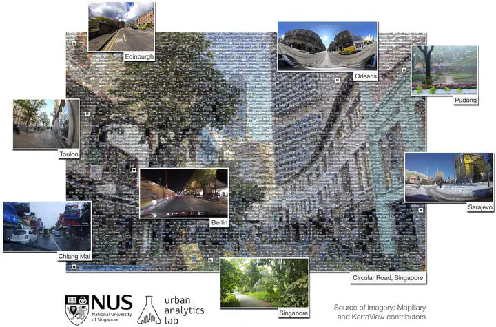</p> <figcaption>The viewpoint matters when measuring visible greenery.</figcaption> <figsubcaption>Source: NUS Global Streetscapes, https://ual.sg/project/global-streetscapes/</figsubcaption> </figure> ] In the opening view, the greenery is a row of planters and a verge. Is that typical of the route? A greening programme needs evidence at the scale of the street: **which walking routes have little visible greenery?** We measure it with **semantic segmentation**, which labels vegetation pixels; GIS then joins their share to walking routes. The result is a shortlist for field visits, where shade, planting space, and who walks there can be checked. --- ## Segment the Scene to Measure Visible Greenery **Semantic segmentation** assigns a class to each pixel: vegetation, road, sky, building, and more. <div align="center"> <figure> <p>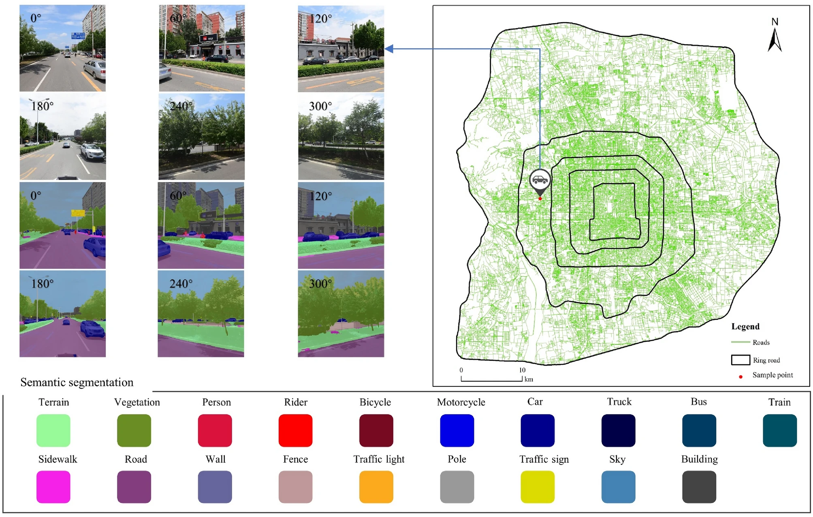</p> <figcaption>Sample street views → classify pixels → calculate visual indicators.</figcaption> <figsubcaption>Source: https://doi.org/10.1038/s41598-024-81451-6</figsubcaption> </figure> </div> .cv-small[ **Notebook section 4 uses SegFormer with Cityscapes weights.** Check its labels against the Singapore images: a model trained for another setting may mislabel unfamiliar views. Instance segmentation instead separates individual objects; it need not label the entire scene. ] .references[ - [SegFormer Cityscapes checkpoint](https://huggingface.co/nvidia/segformer-b0-finetuned-cityscapes-1024-1024) ] --- name: mask-review ## Inspect the Masks Before Trusting the Indicator <em>Compare the panorama and masks. Where could a wrong vegetation boundary change a greening shortlist?</em> .left_half[ <iframe class="segmentation-example-frame" src="html_snippets/panoramic-segmentation/selected_example/generated_toggle.html" title="Interactive panoramic image segmentation comparison" loading="lazy" allowfullscreen> </iframe> ] .right_half[ <iframe class="segmentation-example-frame" src="html_snippets/panoramic-segmentation/selected_example/generated_curtain_overlay.html" title="Interactive panoramic image segmentation comparison" loading="lazy" allowfullscreen> </iframe> ] <div style="clear: both"></div> .cv-small[Check trees against buildings, distant vegetation, and obstructed views. This panorama illustrates the method; it is separate from the traffic-camera sample.] --- ## Green View Share: A Number with a Viewpoint <div class="cv-flow"> <div><strong>Numerator</strong><br>pixels labelled vegetation</div> <div><strong>Denominator</strong><br>all valid pixels in the chosen view</div> <div><strong>Share</strong><br>vegetation pixels / valid pixels</div> </div> .cv-compact-table[ | Indicator | Observation | Urban Question | |---|---|---| | Eye-level Green View Index (GVI) | consistently sampled street-level views | how much greenery is visible along a walking route? | | Traffic-camera green share | elevated camera field of view | how much of this camera image is vegetation? | | NDVI | red and near-infrared reflectance | where is photosynthetically active vegetation evident in the raster? | ] **For comparability:** use consistent viewpoints, directions, cropping, seasons, vegetation classes, and invalid-pixel rules. Panorama projection also affects pixel weighting. **For heat mitigation:** add shade observations and temperature or thermal-comfort evidence; visible greenery alone does not measure cooling. --- name: greenery-result ## Result: Green Share Across the Eight Cameras <div align="center"> <p>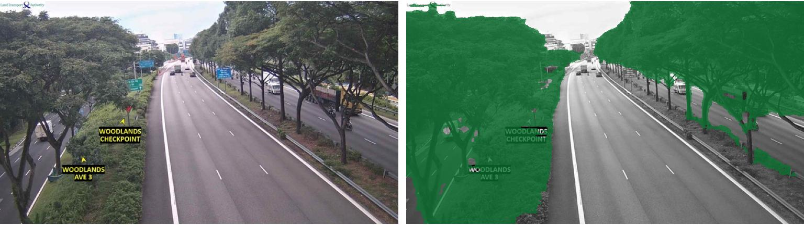</p> </div> .cv-compact-table[ | Camera | 2704 | 4798 | 4712 | 4713 | 2702 | 4799 | 2701 | 4703 | |---|---|---|---|---|---|---|---|---| | Vegetation share | 0.55 | 0.50 | 0.37 | 0.36 | 0.27 | 0.10 | 0.03 | 0.02 | ] **Camera 2704 (above), 0.55:** the mask follows the canopy, but also covers road seen through the trees on the left. **The opening view, 4799, 0.10:** mostly background trees and the right-hand verge; most planters on the left are missed. A low share flags the view for a closer look. .cv-small[SegFormer (Cityscapes weights), share of all pixels; notebook sections 4–5.] --- name: pedestrian-access ## Pedestrian Access: Where Should We Inspect? The red path in the opening view looks walkable. On the ground, a path that is mapped or visible may still be narrow, broken, or blocked. .cv-compact-table[ | Inspection Question | Technology | Reviewable Output | |---|---|---| | Is a path visible in this view? | image classification | visible / not visible / uncertain | | Where are obstacles and path surfaces? | detection + segmentation | boxes and masks linked to the image | | Which visible features explain the flag? | vision-language model (VLM) | structured audit answer with visual evidence | | Is there enough usable space? | calibrated geometry + field measurement | verified dimensions and access conditions | ] Images help **prioritise site visits** along routes to bus stops, schools, or clinics. They flag a site; they cannot certify it as accessible. --- ## Classification: Sort Views for a Pedestrian Audit **Question:** which images should a reviewer inspect for a possible missing footpath? <div class="cv-flow"> <div><strong>Define the labels</strong><br>visible / not visible / uncertain</div> <div><strong>Classify the view</strong><br>image-level category</div> <div><strong>Review the flags</strong><br>confirm against the image</div> </div> - Create a locally labelled sample with a clear audit rubric. - Test on streets excluded from training; nearby duplicate views can inflate accuracy. - Review false negatives: a missed problem may remove a route from the inspection list. - Keep “uncertain” or request review when the view is obstructed. **Output:** an image-level audit label. It does not locate an obstacle; use detection or segmentation for that. .cv-small[ Custom labels require suitable training or an evaluated prompting workflow. Off-the-shelf scene classes do not automatically match this audit rubric. ] --- ## VLMs: Turn Visible Features into an Audit Record .right_half[ <figure> <p>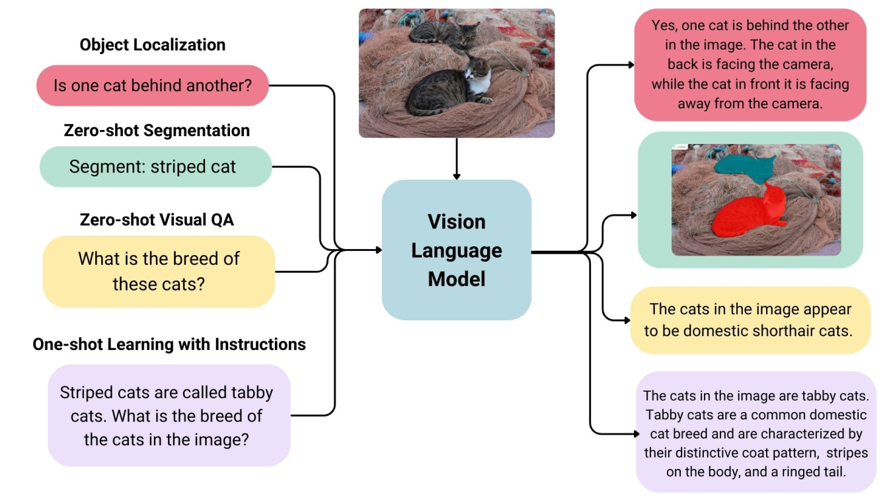</p> <figcaption>VLMs accept images and language prompts.</figcaption> <figsubcaption>Source: https://www.ultralytics.com/blog/understanding-vision-language-models-and-their-applications</figsubcaption> </figure> ] **Question:** what visible evidence suggests a path obstruction? .cv-small[ **Example prompt:** “Is a pedestrian path visible? Is an obstruction visible on it? Return yes / no / uncertain for each, describe the supporting image region, and state what cannot be judged.” **Technology:** a vision-language model connects image content with a natural-language request. **Review:** compare answers with a human audit using the same rubric. Preserve the image ID, prompt, model version, and reviewer decision. **Output:** a draft inspection record. Fluent descriptions can be wrong; verify the cited region and avoid inferring residents' traits or intentions. ] --- name: access-result ## Result: A Draft Audit Record for the Opening View .left_half[ .cv-compact-table[ | Prompt Item | VLM Answer | Reviewer | |---|---|---| | Path visible? | **yes**: red-surfaced strip along the outer edge of the left carriageway, separated by a kerb | ☐ agree ☐ change | | Obstruction visible? | **uncertain**: lamp posts and a red-and-white post stand at the outer edge; whether they narrow the path cannot be seen | ☐ agree ☐ change | | Cannot judge | width, surface condition, kerb ramps, whether cyclists share it, the path beyond the frame | — | ] ] .right_half[ <figure> <figcaption>Camera 4799: the red-surfaced path is on the far left.</figcaption> </figure> ] <div style="clear: both"></div> **Back to the question:** a separated path is visible here; check the edge posts and continuity on site before marking the route clear. .cv-small[Answer from a VLM (Claude) given this image and the previous slide's prompt. The reviewer column stays blank until someone checks it against the rubric.] --- name: urban-evidence ## Match the Imagery to the Urban Evidence Needed .cv-compact-table[ | Urban Issue | Suitable Source | Observation Unit | Limitation to Resolve | |---|---|---|---| | Vehicle queues and crossings | traffic-camera images or video | fixed view + time interval | occlusion, view changes, insufficient frame frequency | | Greenery along walking routes | street-view images | sampled point + direction + date | uneven routes, seasons, capture dates | | Planting space and canopy | aerial imagery | georeferenced pixel / parcel | top-down view omits eye-level experience | | Vegetation and surface heat patterns | suitable satellite spectral / thermal data | pixel / grid + acquisition date | resolution, clouds; surface heat is not felt heat | | Reported place experience | volunteered or social images | contributed image + place | selective posting and uncertain representativeness | ] **Choose the source after defining the question.** Combine complementary viewpoints with explicit dates and units; do not treat them as interchangeable measurements. [Open-source directory](#visual-data-sources) · [Traffic API practice](#api-practice) --- ## Aggregate Observations to Useful GIS Units **Question:** which streets need an inspection, and how much evidence supports each one? .cv-compact-table[ | Observation | GIS Unit | Aggregation Rule | Keep Alongside the Value | |---|---|---|---| | green share per standardised view | walking street segment | summarise sampled views with stated weights | sample count, spread, dates, missing coverage | | reviewed obstruction label | route / street segment | flag observed locations for inspection | evidence image, direction, review status | | vehicle crossings per interval | counted line / approach | sum unique crossings over measured time | duration, direction, missing frames | | scene class per image | neighbourhood sample | report class proportions among sampled views | sample design and uncertain labels | ] **Spatial join:** retain image IDs and link observations to the intended street or site. Nearest-road matching can pick the wrong carriageway; camera position may differ from the scene observed. **Avoid false precision:** broad averages can hide one obstructed link or a short stretch with low greenery. --- ## Combine Layers to Build an Inspection Shortlist **Planning workflow:** identify walking routes with low observed greenery, then inspect routes that connect people to everyday services. <div class="cv-flow"> <div><strong>Visual evidence</strong><br>greenery + reviewed access flags</div> <div><strong>GIS context</strong><br>walking network + stops + destinations</div> <div><strong>Field shortlist</strong><br>candidate routes + evidence gaps</div> </div> - Join observations to streets; map coverage before ranking. - Add population, service access, and measured environmental conditions. - State the prioritisation rule; test whether different weights change the shortlist. - Visit candidate routes to check shade, usable space, and planting feasibility. **For urban models:** match dates and units, evaluate on separate areas, and consider confounding. --- name: takeaways ## Return to the Urban Questions .cv-compact-table[ | Issue | Technology Contributes | What Our Sample Showed | Decision Still Needs | |---|---|---|---| | Traffic pressure | detection gives boxes; tracking gives temporal associations | queue at 4703; RT-DETR 9, YOLO 11, both miss many | defined observation intervals and validated movement measures | | Street greenery | segmentation gives masks; GVI summarises a chosen view | opening view 4799 among the lowest (0.10) | representative routes, consistent viewpoints, field checks | | Pedestrian access | classification and VLMs structure audits; geometry adds spatial evidence | path visible at 4799; edge posts uncertain | human review, verified dimensions, current site conditions | ] **The reusable sequence:** urban question → suitable images → measurable output → local validation → GIS context → justified action. **A good result says both what was observed and what remains unknown.** [Revisit the opening view](#urban-questions) · [Toolkit reference](#image-raster) · [Data sources and API practice](#visual-data-sources) <button onclick="window.location.href='webmap.html'">Continue to Web-Based Spatial Visualisation</button> --- name: image-raster ## Reference: From a Photograph to Model Input .right_half[ <figure> <img src="imgs/urbanCV/AI%26cv.jpeg" alt="Overview of artificial intelligence and computer vision" class="zoomable" width="100%"> <figcaption>Computer vision supplies the image measurements in our workflow.</figcaption> </figure> ] **An image is a raster:** our sample has 360 rows × 640 columns × 3 RGB bands. - Pixel values encode colour; they do not directly label a car or a tree. - A trained model turns visual patterns into boxes, masks, or labels. - Resizing can make distant motorcycles too small to recognise. **Keep a separate record:** image ID, camera ID, coordinates, capture time, viewpoint, and processing settings. .cv-small[ A pixel location is not a map coordinate. Camera coordinates locate the observation point; locating objects on the ground needs camera geometry or other georeferencing. ] --- name: svi-indexs ## Reference: Other Pixel Shares Help Frame Street Audits .cv-compact-table[ | Visible Class | Image Measurement | Urban Use | Needs Additional Evidence | |---|---|---|---| | Vegetation | vegetation pixel share | identify low-greenery views | shade and planting feasibility | | Sky | sky pixel share | compare visual openness | calibrated geometry for a sky-view factor | | Road | road pixel share | describe the captured streetscape | mapped road area and perspective correction | | Sidewalk | sidewalk pixel share | flag views for pedestrian-path review | usable width, continuity, obstructions | | Building | building pixel share | describe visual enclosure | heights, setbacks, and street geometry | ] **Pixel share measures the image.** It is not automatically ground-area share, pedestrian accessibility, or a physical dimension. **Practical:** compare camera 2704 with 2701. Inspect what the segmentation model does with water before mapping any class shares. --- ## Reference: When the Question Needs More Than a Label **Possible extensions:** select these only when the required observations and validation are available. .cv-compact-table[ | Urban Investigation | Technology | Useful Output | Essential Check | |---|---|---|---| | Which objects occupy a kerbside area? | instance segmentation | separate masks for individual vehicles or objects | projected mask area is not ground area | | How are vehicles arranged in an aerial parking view? | oriented bounding boxes (OBB) | boxes with orientation | aerial resolution, classes, and georeferencing | | How do people move through a crossing? | pose estimation + temporal tracking | keypoints and movement sequences | occlusion, annotation quality; posture does not reveal intent | | Could a path contain a narrow passage? | depth estimation + camera geometry | estimated scene geometry | scale calibration and field measurements before width claims | ] **These are study-design options, not outputs of the supplied notebook.** Each requires task-specific models or additional processing. --- name: yolo-modes ## Reference: YOLO Tasks and Modes **YOLO = You Only Look Once.** In Ultralytics, a **task** defines the output; a **mode** defines the operation. .cv-yolo-columns[ .cv-yolo-column[ ### Urban question → task | Task | Urban Observation | |---|---| | Detection | boxes + classes → locate vehicles | | Instance segmentation | one mask per object → separate cars | | Semantic segmentation | class per pixel → road / sky / greenery | | Classification | image label → street scene type | | Pose estimation | keypoints → pedestrian posture | | Oriented boxes (OBB) | rotated boxes → aerial vehicle orientation | | Depth estimation | depth per pixel → scene geometry | ] .cv-yolo-column[ ### Modes: what do you want to do? | Mode | Purpose | |---|---| | **Train** | adapt to local traffic images | | **Val** | check errors on labelled local views | | **Predict** | detect vehicles in new observations | | **Track** | link vehicles through video frames | | **Export** | prepare the model for a camera device | | **Benchmark** | compare device speed and accuracy | ] ] .cv-yolo-note[ **Toolkit recap; the notebook compares YOLO with RT-DETR for detection and uses SegFormer for segmentation.** Choose compatible weights: task support depends on the model family, weights, and package version; one checkpoint does not perform every task. For greening, use vegetation classes; for flow, tracking needs sequential frames. Validate each task on local observations. Sources: [Ultralytics tasks](https://docs.ultralytics.com/tasks/) · [Ultralytics modes](https://docs.ultralytics.com/modes/) ] ??? The task list follows the current Ultralytics documentation, including semantic segmentation and depth estimation. Older model families and package versions may support fewer tasks. Workflow modes are not universally available for every task; check the selected model's support matrix. Example: vehicle detection + Predict gives boxes in each image; vehicle detection + Track associates those boxes across consecutive video frames. Neither a snapshot count nor a track ID alone establishes representative traffic flow. Depth estimates also need local validation before use as physical measurements. --- name: visual-data-sources ## Resource: Find Images for Your Urban Question .cv-source-examples[ | Source Type | Example Sources | Urban Investigation | Check Before Use | |---|---|---|---| | Satellite imagery | [USGS Landsat](https://www.usgs.gov/landsat-missions/landsat-data-access)<br>[Copernicus Sentinel](https://dataspace.copernicus.eu/) | land cover, NDVI, surface temperature, urban expansion | resolution, clouds, revisit interval | | Aerial imagery | [USDA NAIP](https://www.usgs.gov/centers/eros/science/usgs-eros-archive-aerial-photography-national-agriculture-imagery-program-naip)<br>[OpenAerialMap](https://openaerialmap.org/) | roofs, roads, tree canopy, fine-scale land cover | country coverage, capture date, license | | Street-view imagery | [Mapillary](https://www.mapillary.com/)<br>[Global Streetscapes](https://huggingface.co/datasets/NUS-UAL/global-streetscapes) | greenery, sidewalks, signs, facades, street quality | uneven coverage, privacy, API terms | | Traffic cameras | [Singapore LTA Traffic Images](https://data.gov.sg/collections/traffic-images/view)<br>[511NY Cameras API](https://511ny.org/developers/help) | repeated traffic observations | live-only data, key access, privacy | | Social or volunteered images | [Flickr API](https://www.flickr.com/services/api/flickr.photos.search.html)<br>[Wikimedia Commons geocoded media](https://commons.wikimedia.org/wiki/Commons:Geocoding) | place perception, activity, tourism, landmark visibility | sampling bias, consent, content license | ] <xL>Open data still needs metadata checks: license, time, location accuracy, coverage, and privacy.</xL> [Return to evidence design](#urban-evidence) · [Next: API practice](#api-practice) --- name: api-practice ## Optional Practice: Collect a New Traffic Observation **Purpose:** compare the same camera at another time; retain capture time and location with every image. .right_half[ <figure> <p>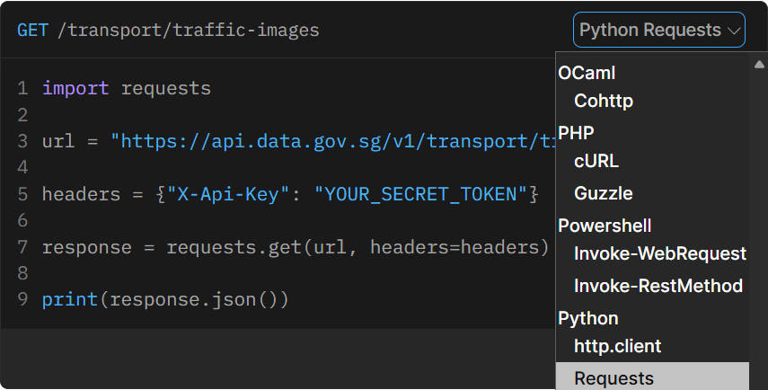</p> <figcaption>The official code example to make API call with Python Request.</figcaption> </figure> ] Step 1: Check [data.gov.sg access and API-key guidance](https://guide.data.gov.sg/developer-guide/api-overview/how-to-request-an-api-key) Step 2: Locate the [LTA traffic-images collection](https://data.gov.sg/collections/traffic-images/view). Step 3: Run the provided [sample downloader](data/sg_traffic_images/download_sample.py) or follow the source API example. Save each collection separately to retain earlier observations. .cv-small[API snapshots support repeated observations; their spacing may not support tracking. Check each camera timestamp rather than assuming the response retrieval time is its capture time.] [Return to the hands-on investigation](#mini-exercise) --- class: cv-api-response ## API Response: Preserve Place and Capture Time **Archived response example (April 2026), separate from the November teaching sample.** Inspect camera timestamps for stale observations. ``` root ├── api_info → API status info └── items → list of data snapshots ├── cameras → list of camera records └── timestamp → Time when this batch of camera data was collected ``` .long_trunk[ ```json { "api_info": { "status": "healthy" }, "items": [ { "cameras": [ { "camera_id": "1001", "image": "https://images.data.gov.sg/api/traffic-images/2026/04/ff1cf74d-f5c8-4ee2-9bba-f063ea4df48b.jpg", "image_metadata": { "height": 240, "md5": "e2ca972b3b48673437c64b8aa73fe6c2", "width": 320 }, "location": { "latitude": 1.29531332, "longitude": 103.871146 }, "timestamp": "2026-04-22T16:01:26+08:00" }, { "camera_id": "9705", "image": "https://images.data.gov.sg/api/traffic-images/2026/04/d0d28373-8fee-4e57-9128-561c4ac6d5e2.jpg", "image_metadata": { "height": 1080, "md5": "f07e7c6dc7d7a820082ded5dea213bd0", "width": 1920 }, "location": { "latitude": 1.42627712, "longitude": 103.78716637 }, "timestamp": "2026-04-22T16:01:26+08:00" }, { "camera_id": "1111", "image": "https://images.data.gov.sg/api/traffic-images/2026/04/ffcfd4d1-5378-4243-a8c1-169a6ceb8c51.jpg", "image_metadata": { "height": 1080, "md5": "9c3132f8e03d2a5112520a66a39dde3a", "width": 1920 }, "location": { "latitude": 1.365434, "longitude": 103.953997 }, "timestamp": "2026-04-22T03:01:32+08:00" } ], "timestamp": "2026-04-22T16:04:46+08:00" } ] } ``` ] --- ## One Camera Record Becomes One GIS Observation .left_half[ <div align="center"> <figure> <p>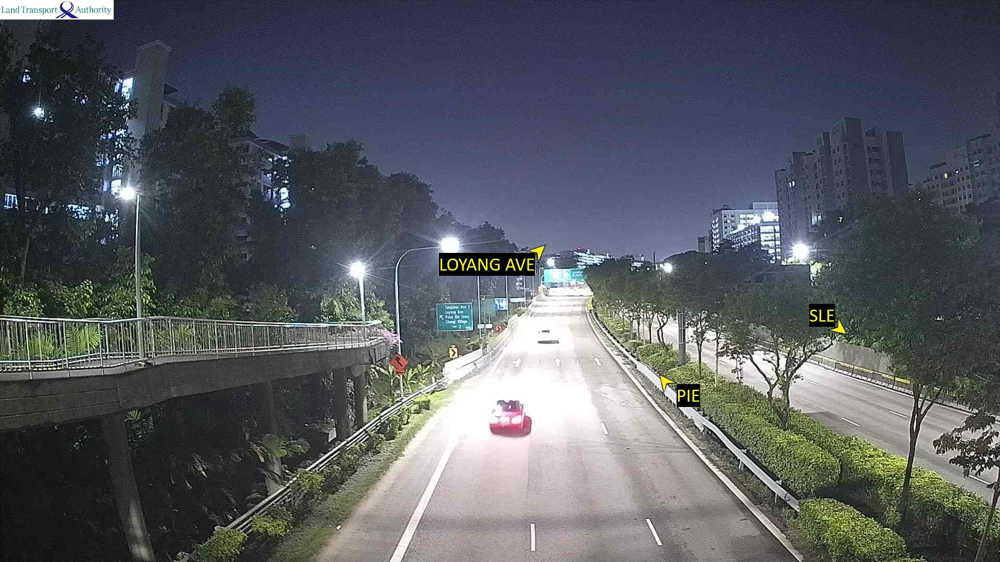</p> <figcaption>Archived LTA traffic image: camera 1111.</figcaption> </figure> </div> ] .right_half.long_trunk[ ```json "camera_id": "1111", "image": "https://images.data.gov.sg/api/traffic-images/2026/04/ffcfd4d1-5378-4243-a8c1-169a6ceb8c51.jpg", "image_metadata": { "height": 1080, "md5": "9c3132f8e03d2a5112520a66a39dde3a", "width": 1920 }, "location": { "latitude": 1.365434, "longitude": 103.953997 }, "timestamp": "2026-04-22T03:01:32+08:00" ``` ] <div style="clear: both"></div> .cv-small[Use camera ID + image timestamp to identify the observation. The coordinates locate the camera; projected vehicle locations need further geometry. This record predates other images in the example batch.] [Return to traffic evidence](#traffic-pressure) · [Return to the exercise](#mini-exercise)